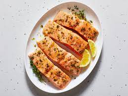

Salmon

Description:
Three ingredients you probably already have on hand--curry powder, yogurt and lemon juice--meld into a mouthwatering sauce that transforms simple grilled salmon. This healthy and easy dinner recipe comes together in just 20 minutes.
Ingredients:
- 1 ¼ pounds sustainable wild or farmed salmon, cut into 4 portions
- 2 tablespoons extra-virgin olive oil, divided
- ½ teaspoon salt, divided
- ½ teaspoon ground pepper, divided
- ½ cup sliced cucumber
- 2 tablespoons chopped fresh cilantro
- 2 tablespoons minced shallot
- ½ cup low-fat plain yogurt
- 2 tablespoons lemon juice
- ¼ teaspoon curry powder
Steps:
- Preheat grill to medium-high.
- Brush salmon with 1 tablespoon oil and sprinkle with 1/4 teaspoon each salt and pepper.
- Oil the grill rack (see Tip). Grill the salmon, turning once, until just cooked through, about 6 minutes.
- Meanwhile, combine cucumber, cilantro and shallot with the remaining 1 tablespoon oil and 1/8 teaspoon each salt and pepper in a medium bowl. Whisk yogurt, lemon juice, curry powder and the remaining 1/8 teaspoon each salt and pepper in a small bowl.
- Serve the salmon with the yogurt sauce and the cucumber salad.